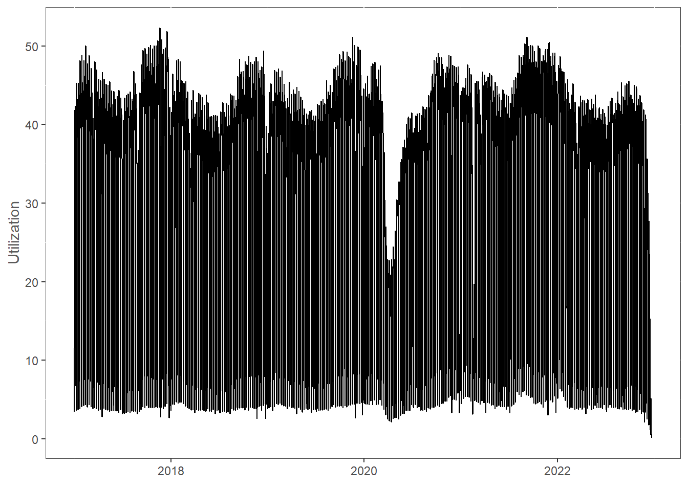
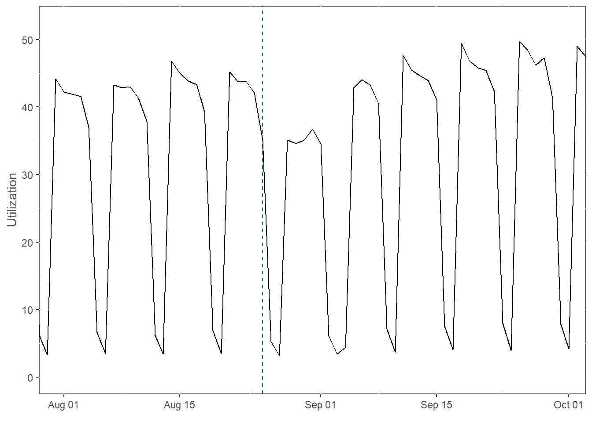
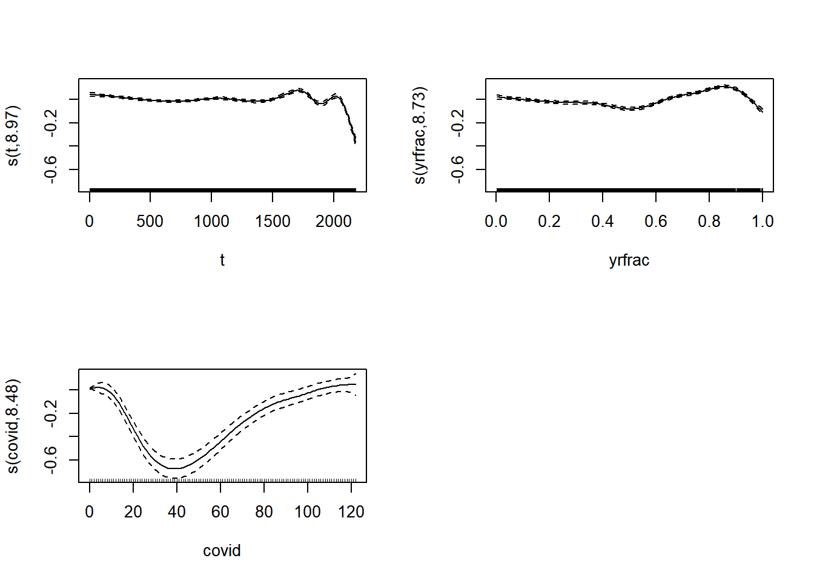
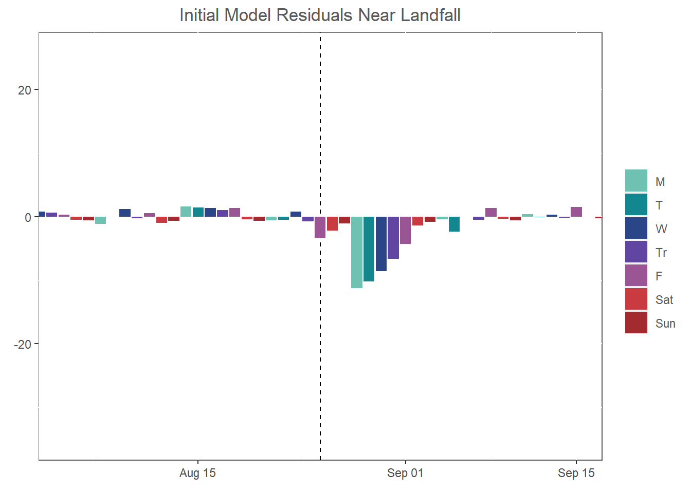
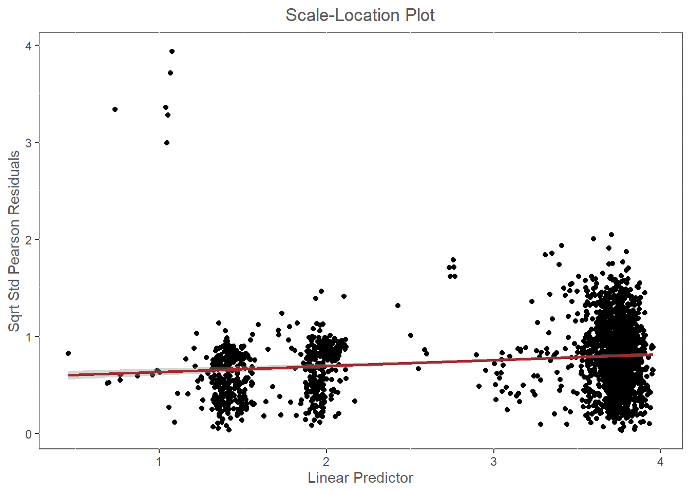
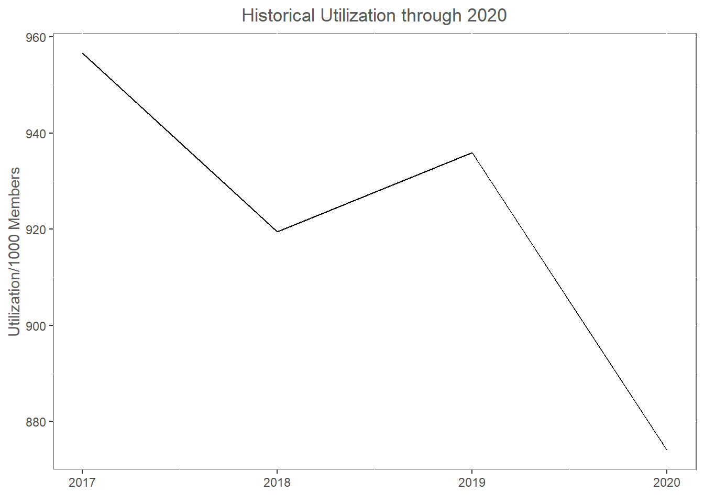
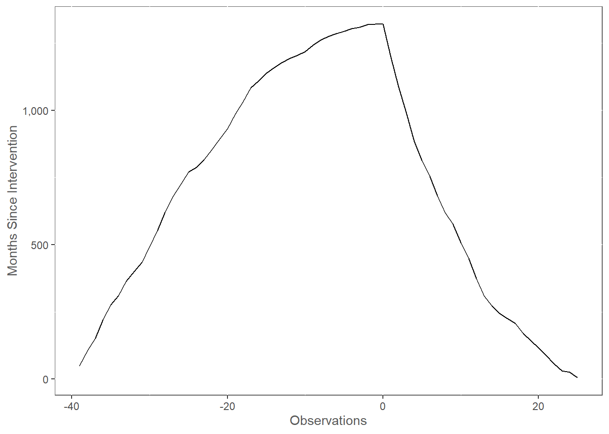

Chapter 3 Hurricane Impact Valuation
3.1 Introduction
Another very similar way I use GAMs is to value utilization impacts caused by storms. The main impacts a health insurer sees from something like a hurricane is a slowdown in utilization from the danger and difficulty traveling caused by the storm. We can adapt the tools we already have from the previous chapter and add elements in order to strengthen our model to be able to use it for hyptothesis testing and quantification. In order to model the hurricane’s effects as rigorously as possible, we need to do some more thorough model validation so we can make sound statistical deductions from it.
3.2 Data
The data this time is utilization for a random set of services for UHC’s commercial fully-insured book of business in Texas.
dat <- fread(
file = file.path('data', 'hurr_data.csv'),
colClasses = c(ds = 'Date')
)
ggplot(dat) +
geom_line(aes(ds, y)) +
labs(
x = element_blank(),
y = 'Utilization'
) +
mytheme
The COVID slowdown is clearly visible. Note also that this data has runout effects at the end of the training period, i.e. the most recent time periods have had less times for claims to process.
As you may remember, Texas was hit by the historic Hurricane Harvey in 2017.
landfall <- as.Date('2017-8-25')
ggplot(dat) +
geom_vline(
xintercept = landfall,
color = colors$Visualization$Lagoon,
linetype = 'dashed'
) +
geom_line(aes(ds, y)) +
coord_cartesian(xlim = as.Date(c('2017-8-1', '2017-9-30'))) +
labs(
x = element_blank(),
y = 'Utilization'
) +
mytheme
3.3 Model Fitting
3.3.1 Initial Predictors
First we add the date variables we’ve been discussing. We will use an initial holiday list and iteratively improve it. For the COVID term, we will just use the parameters I’ve already determined at work to make the example shorter. In a real modeling context, you would determine the width of the COVID window and the optimal smooth parameters using the same methods we will employ to create the hurricane term.
dat[
,
`:=`(
t = .I,
yr = year(ds),
yrfrac = as.numeric(strftime(ds, '%j')),
covid = 0L,
wkdy = factor(
strftime(ds, '%u'),
labels = c('M', 'T', 'W' ,'Tr', 'F', 'Sat', 'Sun')
)
)
][
,
yrfrac := yrfrac / max(yrfrac),
by = .(yr)
][
.(seq(from = as.Date('2020-3-1'), length.out = 122, by = 1)),
covid := .I,
on = 'ds'
]
hols_st <- fread(
file = file.path('data', 'hols_st.csv'),
colClasses = c(ds = 'Date')
)
dat <- hols_st[
dat,
on = 'ds'
][
is.na(hol),
hol := 'none'
]
setkey(dat, ds)3.3.2 Initial Model
To start with, we can fit an initial model that’s basically the same as the forecasting model we were working with in the prior chapter. I like to account for runout by setting more knot points for the trend component to allow it to capture the sharp drop in claims.
ts <- dat[
mday(ds) == 1 &
(month(ds) == 1 | ds > as.Date('2021-6-30')),
t
]
m_init <- gam(
y ~ s(t) + s(yrfrac) + s(covid, k = 122 / 7) + wkdy + hol,
family = gaussian(link = 'log'),
data = dat,
knots = list(t = ts)
)
plot(m_init, pages = 1)
3.3.3 Deriving the Holiday List
My method for figuring out a good list of holidays to use is pretty simple: just examine residuals until there aren’t any holiday effects in the days with the largest prediction error.
dat[
,
yhat := as.vector(predict(m_init, type = 'response'))
][
,
err := y - yhat
]
dat[order(-abs(err)), .(ds, hol, err)][1:20, ]## ds hol err
## 1: 2021-02-16 none -35.27132
## 2: 2021-02-17 none -34.25963
## 3: 2021-02-15 Presidents Day -33.54259
## 4: 2019-11-29 none -30.68251
## 5: 2018-12-24 none -30.16144
## 6: 2021-02-18 none -28.81933
## 7: 2022-12-20 none -26.41082
## 8: 2019-12-24 none -25.93548
## 9: 2019-11-22 Thanksgiving - Day After 25.91863
## 10: 2022-12-21 none -25.89014
## 11: 2020-12-24 none -25.42490
## 12: 2022-02-03 none -24.04580
## 13: 2022-12-19 none -23.14676
## 14: 2022-02-04 none -19.43623
## 15: 2021-02-19 none -17.49539
## 16: 2018-01-16 none -17.16050
## 17: 2022-12-16 none -14.53009
## 18: 2018-12-31 none -14.31273
## 19: 2022-02-24 none -13.16629
## 20: 2022-12-15 none -12.12472There’s actually a pattern in the residuals that I forgot about: Winter Storm Uri, the unofficial name for the ice storms that hit Texas in 2021. We’ll add a term for that below. As for holidays, the main potential that jumps out at me right now is effects related to Christmas Eve, so let’s examine that more closely.
lbls <- c(paste0(12, 16:31), paste0('01', 0, 1:9))
pdat <- dat[
,
.(day = strftime(ds, '%m%d'), yr = year(ds) + (month(ds) == 12),
wkdy, err)
][
.(lbls),
on = 'day'
][
,
`:=`(
yr = factor(yr),
day = factor(day, levels = lbls)
)
]
ggplot(pdat) +
geom_bar(
aes(day, err, group = wkdy, fill = wkdy),
stat = 'identity'
) +
facet_grid(yr ~.) +
scale_discrete_optum('fill') +
labs(
title = 'Christmas and New Year\'s',
x = element_blank(),
y = 'Utilization',
fill = 'Weekday'
) +
mytheme +
theme_rotxChistmas Eve and New Year’s Eve appear to be exhibiting what I call “bridge effects:” the days only seem to have slowdowns when they create a four-day weekend along with the main holiday. Independence Day also displayed a similar pattern. I will skip straight to the final holiday list, but you would keep iterating on fitting models and examining the residuals to add more holiday or other outlier terms.
dat[, hol := NULL]
hols <- fread(
file = file.path('data', 'hols.csv'),
colClasses = c(ds = 'character')
)[
,
ds := as.Date(ds)
]
dat <- hols[dat, on = 'ds']
dat[is.na(hol), hol := 'none']
dat[, hol := relevel(factor(hol), ref = 'none')]3.3.4 Hurricane Effect Window
The last thing we need to do with out initial model is figure out a good effect window to assume for the hurricane. I do this in a similar way to creating the holiday list, by examining initial model residuals around landfall.
ggplot(dat) +
geom_vline(xintercept = landfall, linetype = 'dashed') +
geom_bar(aes(ds, err, fill = wkdy), stat = 'identity') +
scale_discrete_optum('fill') +
coord_cartesian(xlim = landfall + c(-21, 21)) +
labs(
title = 'Initial Model Residuals Near Landfall',
x = element_blank(),
y = element_blank(),
fill = element_blank()
) +
mytheme
Like with holidays, I’m going to skip to using the window I already derived at work. To do it on your own, you would iterate through fitting a model with a potential hurricane window, examining the estimated smooth to make sure it’s reasonable, and examining the prediction errors around landfall for that model.
3.3.5 Penultimate Model
After the above process is done, we have a specification for all of the outliers and interventions we need for the penultimate, or next to last, model.
dat[, uri := 0L]
dat[
.(seq(from = as.Date('2021-2-14'), length.out = 7, by = 1)),
uri := .I,
on = 'ds'
]
dat[, harvey := 0L]
dat[
.(seq(from = landfall - 2, length.out = 21, by = 1)),
harvey := .I,
on = 'ds'
]
m_penult <- gam(
y ~ s(t) + s(yrfrac) + s(covid, k = 122 / 7) + s(uri, k = 7)
+ s(harvey, k = 21) + wkdy + hol,
family = gaussian(link = 'log'),
data = dat,
knots = list(t = ts)
)
summary(m_penult)##
## Family: gaussian
## Link function: log
##
## Formula:
## y ~ s(t) + s(yrfrac) + s(covid, k = 122/7) + s(uri, k = 7) +
## s(harvey, k = 21) + wkdy + hol
##
## Parametric coefficients:
## Estimate Std. Error t value Pr(>|t|)
## (Intercept) 3.785078 0.003034 1247.446 < 2e-16 ***
## wkdyT -0.033896 0.004243 -7.988 2.23e-15 ***
## wkdyW -0.065864 0.004336 -15.189 < 2e-16 ***
## wkdyTr -0.070122 0.004346 -16.137 < 2e-16 ***
## wkdyF -0.185418 0.004637 -39.984 < 2e-16 ***
## wkdySat -1.835358 0.018280 -100.403 < 2e-16 ***
## wkdySun -2.395776 0.031691 -75.599 < 2e-16 ***
## holChristmas -2.390926 0.269866 -8.860 < 2e-16 ***
## holChristmas - Day After -0.289921 0.042223 -6.866 8.61e-12 ***
## holChristmas Eve -1.191191 0.099507 -11.971 < 2e-16 ***
## holIndependence Day -1.933519 0.159968 -12.087 < 2e-16 ***
## holIndependence Day - Bridge Day -0.298177 0.056288 -5.297 1.30e-07 ***
## holLabor Day -2.264282 0.192997 -11.732 < 2e-16 ***
## holMemorial Day -2.265312 0.209980 -10.788 < 2e-16 ***
## holNew Year's -1.848559 0.138372 -13.359 < 2e-16 ***
## holNew Year's - Day After -0.142470 0.036071 -3.950 8.08e-05 ***
## holNew Year's Eve -0.434925 0.048754 -8.921 < 2e-16 ***
## holPresidents Day 0.012921 0.022767 0.568 0.57
## holThanksgiving -2.770453 0.335150 -8.266 2.40e-16 ***
## holThanksgiving - Day After -0.958753 0.061687 -15.542 < 2e-16 ***
## holThanksgiving - Day Before -0.177955 0.025493 -6.981 3.91e-12 ***
## ---
## Signif. codes: 0 '***' 0.001 '**' 0.01 '*' 0.05 '.' 0.1 ' ' 1
##
## Approximate significance of smooth terms:
## edf Ref.df F p-value
## s(t) 8.979 9.000 129.33 <2e-16 ***
## s(yrfrac) 8.673 8.969 117.04 <2e-16 ***
## s(covid) 9.305 11.236 95.60 <2e-16 ***
## s(uri) 3.058 3.675 52.66 <2e-16 ***
## s(harvey) 4.310 5.250 10.56 <2e-16 ***
## ---
## Signif. codes: 0 '***' 0.001 '**' 0.01 '*' 0.05 '.' 0.1 ' ' 1
##
## R-sq.(adj) = 0.983 Deviance explained = 98.3%
## GCV = 5.2655 Scale est. = 5.132 n = 2181plot(m_penult, pages = 1)From a quick look at summary() and plot(), it looks like our model is on the right track.
There are two things we need to test for and correct before we can make valid statistical deductions from the model, however.
3.3.6 Serial Autocorrelation of Errors
Since we are working with time series data, observations are correlated through time. A regression model cannot have any serial autocorrelation of errors, however, because the standard errors of the estimated coefficients will be too small. We check for serial autocorrelation using ACF and PACF plots.
res <- residuals(m_penult, type = 'response')
sig_color <- colors$Visualization$Iris
myacf <- acf(res, plot = F)
ci <- qnorm(.975)/sqrt(myacf$n.used)
pdat <- with(
myacf,
data.table(lag = as.vector(lag), acf = as.vector(acf))
)
pdat[lag == 0, acf := 0]
myacf <- ggplot(pdat, aes(x = lag, y = acf)) +
geom_hline(aes(yintercept = 0)) +
geom_segment(mapping = aes(xend = lag, yend = 0)) +
labs(x = 'Lag', y = 'ACF') +
geom_hline(
aes(yintercept = -ci),
linetype = 'dashed',
color = sig_color
) +
geom_hline(
aes(yintercept = ci),
linetype = 'dashed',
color = sig_color
) +
mytheme
mypacf <- pacf(res, plot = F)
ci <- qnorm(.975)/sqrt(mypacf$n.used)
pdat <- with(
mypacf,
data.table(lag = as.vector(lag), acf = as.vector(acf))
)
pdat[lag == 0, acf := 0]
mypacf <- ggplot(pdat, aes(x = lag, y = acf)) +
geom_hline(aes(yintercept = 0)) +
geom_segment(mapping = aes(xend = lag, yend = 0)) +
labs(x = 'Lag', y = 'PACF') +
geom_hline(
aes(yintercept = -ci),
linetype = 'dashed',
color = sig_color
) +
geom_hline(
aes(yintercept = ci),
linetype = 'dashed',
color = sig_color
) +
mytheme
grid.arrange(
myacf,
mypacf,
ncol = 2
)A valid model will have all of the vertical lines (very close to) within the confidence bands.
3.3.7 Heteroskedasticity
A regression model must also exhibit homoskedasticity, or have constant error variance. Violating this assumption not only decreases the standard errors but can also bias coefficient estimates. The fitting algorithms used by regression models assume that every observation contributes an equal amount of information to coefficient estimation. Heteroskedasticity entails that the higher-variance regions in the training data contribute less information. The standard way to check for it is via a scale-location plot.
wpr <- residuals(m_penult, type = 'pearson')
pdat <- data.table(
# sqrt standardized Pearson residuals
sspr = sqrt(abs(wpr / sd(wpr))),
# predictions (on scale of linear predictor)
pred = predict(m_penult)
)
ggplot(pdat, aes(pred, sspr)) +
geom_point() +
geom_smooth(
formula = y ~ x,
method = 'lm',
color = colors$Visualization$Strawberry
) +
labs(
title = 'Scale-Location Plot',
x = 'Linear Predictor',
y = 'Sqrt Std Pearson Residuals'
) +
mythemeHeteroskedasticity manifests in a scale-location plot as deviations from a flat, straight red line. A quick way to correct for it is to weight training observations with the errors from the penultimate model. It would be more elegant to use a priori weights, but I haven’t yet come up with a good algorithm for calculating those for the general utilization dataset.
3.3.8 Final Model
To complete model fitting, we re-fit the penultimate model with an error correlation model to correct for serial autocorrelation and weights to correct for heteroskedasticity.
Unfortunately, the best way to correct for serial autocorrelation that I believe is currently possible is very labor-intensive: you have to build a correlation model by hand, eyeballing the coefficients using the ACF and PACF plots.
In general, the lines on the ACF chart tell you the lag-n autocorrelation coefficient, and those on the PACF the moving average coefficient.
They interact with each other in ways that are difficult to predict, however.
I start with the lag 1 and multiples of 7 autoregressive coefficients and go from there.
It is not important to get these estimates exactly right, you just need a good enough correlation model to account for correlated residuals.
We use the gamm() function (short for generalized additive mixed model) to pass in a correlation model for the errors and supply a weights argument for heteroskedasticity.
wts <- sqrt(abs(residuals(m_penult, type = 'scaled.pearson')))The code to fit the model looks like this.
p <- c(.55, 0, 0, 0, 0, 0, 0,
0, 0, 0, 0, 0, 0, .07,
0, 0, 0, 0, 0, 0, .06)
q <- c(0, 0, 0, 0, 0, .08, 0,
.1, 0, 0, 0, 0, 0, 0,
0, 0, 0, 0, 0, 0, 0,
-.05)
m_final <- gamm(
y ~ s(t) + s(yrfrac) + s(covid, k = 122 / 7) + s(uri, k = 7)
+ s(harvey, k = 21) + wkdy + hol,
family = gaussian(link = 'log'),
data = dat,
knots = list(t = ts),
correlation = corARMA(
value = c(p, q),
p = length(p),
q = length(q),
fixed = T
),
weights = wts
)Fitting this model took many hours because of all of the modifications we’ve added, so I’ve just cached the fitted model in the data subfolder of our Github repository.
m_final <- readRDS(file = file.path('data', 'm_final.RDS'))
summary(m_final$gam)##
## Family: gaussian
## Link function: log
##
## Formula:
## y ~ s(t) + s(yrfrac) + s(covid, k = 122/7) + s(uri, k = 7) +
## s(harvey, k = 21) + wkdy + hol
##
## Parametric coefficients:
## Estimate Std. Error t value Pr(>|t|)
## (Intercept) 3.7684028 0.0065583 574.601 < 2e-16 ***
## wkdyT -0.0427913 0.0053828 -7.950 3.00e-15 ***
## wkdyW -0.0814813 0.0072804 -11.192 < 2e-16 ***
## wkdyTr -0.1010531 0.0079996 -12.632 < 2e-16 ***
## wkdyF -0.2180938 0.0083694 -26.058 < 2e-16 ***
## wkdySat -1.9861325 0.0530410 -37.445 < 2e-16 ***
## wkdySun -2.5842627 0.1048317 -24.652 < 2e-16 ***
## holChristmas -2.2011358 0.3429394 -6.418 1.69e-10 ***
## holChristmas - Day After -0.2236717 0.0487236 -4.591 4.68e-06 ***
## holChristmas Eve -1.1433660 0.1284091 -8.904 < 2e-16 ***
## holIndependence Day -1.6876224 0.1300657 -12.975 < 2e-16 ***
## holIndependence Day - Bridge Day -0.2197339 0.0810224 -2.712 0.00674 **
## holLabor Day -2.3877992 0.3534898 -6.755 1.84e-11 ***
## holMemorial Day -2.4493897 0.5459640 -4.486 7.63e-06 ***
## holNew Year's -1.6572612 0.1295243 -12.795 < 2e-16 ***
## holNew Year's - Day After 0.0193896 0.0741909 0.261 0.79385
## holNew Year's Eve -0.3398861 0.0580711 -5.853 5.58e-09 ***
## holPresidents Day 0.0008035 0.0403463 0.020 0.98411
## holThanksgiving -0.6035092 0.0947922 -6.367 2.36e-10 ***
## holThanksgiving - Day After -0.5728268 0.0373162 -15.351 < 2e-16 ***
## holThanksgiving - Day Before -0.0548677 0.0249713 -2.197 0.02811 *
## ---
## Signif. codes: 0 '***' 0.001 '**' 0.01 '*' 0.05 '.' 0.1 ' ' 1
##
## Approximate significance of smooth terms:
## edf Ref.df F p-value
## s(t) 8.874 8.874 40.629 < 2e-16 ***
## s(yrfrac) 7.597 7.597 21.868 < 2e-16 ***
## s(covid) 6.212 6.212 17.103 < 2e-16 ***
## s(uri) 3.092 3.092 11.071 5.53e-07 ***
## s(harvey) 2.505 2.505 4.515 0.0321 *
## ---
## Signif. codes: 0 '***' 0.001 '**' 0.01 '*' 0.05 '.' 0.1 ' ' 1
##
## R-sq.(adj) = 0.923
## Scale est. = 11.506 n = 2181plot(m_final$gam, pages = 1)
res <- residuals(m_final$lme, type = 'normalized')
myacf <- acf(res, plot = F)
ci <- qnorm(.975)/sqrt(myacf$n.used)
pdat <- with(
myacf,
data.table(lag = as.vector(lag), acf = as.vector(acf))
)
pdat[lag == 0, acf := 0]
myacf <- ggplot(pdat, aes(x = lag, y = acf)) +
geom_hline(aes(yintercept = 0)) +
geom_segment(mapping = aes(xend = lag, yend = 0)) +
labs(x = 'Lag', y = 'ACF') +
geom_hline(
aes(yintercept = -ci),
linetype = 'dashed',
color = sig_color
) +
geom_hline(
aes(yintercept = ci),
linetype = 'dashed',
color = sig_color
) +
mytheme
mypacf <- pacf(res, plot = F)
ci <- qnorm(.975)/sqrt(mypacf$n.used)
pdat <- with(
mypacf,
data.table(lag = as.vector(lag), acf = as.vector(acf))
)
pdat[lag == 0, acf := 0]
mypacf <- ggplot(pdat, aes(x = lag, y = acf)) +
geom_hline(aes(yintercept = 0)) +
geom_segment(mapping = aes(xend = lag, yend = 0)) +
labs(x = 'Lag', y = 'PACF') +
geom_hline(
aes(yintercept = -ci),
linetype = 'dashed',
color = sig_color
) +
geom_hline(
aes(yintercept = ci),
linetype = 'dashed',
color = sig_color
) +
mytheme
grid.arrange(
myacf,
mypacf,
ncol = 2
)
wpr <- residuals(m_final$gam, type = 'pearson') / wts
pdat <- data.table(
# sqrt standardized Pearson residuals
sspr = sqrt(abs(wpr / sd(wpr))),
# predictions (on scale of linear predictor)
pred = predict(m_penult)
)
ggplot(pdat, aes(pred, sspr)) +
geom_point() +
geom_smooth(
formula = y ~ x,
method = 'lm',
color = colors$Visualization$Strawberry
) +
labs(
title = 'Scale-Location Plot',
x = 'Linear Predictor',
y = 'Sqrt Std Pearson Residuals'
) +
mytheme
We are using the parameters I’ve already come up with, but in reality, we would cycle through examining these four outputs and tweaking model parameters until everything looks good. This is a time-consuming and sometimes frustrating process!
At the end of all this, however, we have a mathematically-robust estimate of the utilization impact due to Hurricane Harvey. We can visualize the estimated smooth like this.
st <- dat[harvey == 1, ds]
hdat <- as.data.table(
confint(
m_final,
parm = 's(harvey)',
type = 'confidence'
)
)[
,
`:=`(
ind = st + (dat[, max(harvey)] / .N ) * .I - 1,
sig = upper < 0 | lower > 0
)
]
ggplot(hdat, mapping = aes(ind)) +
geom_hline(yintercept = 1, linetype = 'dashed') +
geom_ribbon(
aes(ymin = exp(lower), ymax = exp(upper)),
alpha = .2
) +
geom_line(
aes(y = exp(est), group = 1, color = sig),
linewidth = 2,
show.legend = F
) +
scale_discrete_optum(aesthetics = 'color') +
labs(
title = 'Estimated Hurricane Harvey Impact',
subtitle = 'Statistically Significant Areas Colored Red',
x = element_blank(),
y = element_blank()
) +
mytheme3.4 Using the Model
3.4.1 Normalizing Experience for Forecasts
Now that we have a model we’re satisfied with, we can use it to normalize experience for forecasting. When forecasting, you have to remove any one-time impacts in history, otherwise forecasts will be biased. For example, imagine we have to forecast 2021 utilization in late 2020. This is what raw historicals looked like at the time.
pdat <- dat[year(ds) < 2022, .(utilk = sum(y) / 12), keyby = .(yr)]
ggplot(pdat[yr < 2021]) +
geom_line(aes(yr, utilk)) +
labs(
title = 'Historical Utilization through 2020',
x = element_blank(),
y = 'Utilization/1000 Members'
) +
mytheme
It’s not a good idea to include 2020 experience in calculation. It’s also not a good idea to use raw 2020 actuals as the baseline for calculating the forecast. Doing all this using the naive average yearly method that you find on the exams would give the following results.
i <- pdat[, mean(utilk / shift(utilk, n = 1, type = 'lag') - 1, na.rm = T)]
ggplot(pdat, aes(yr, utilk)) +
geom_line() +
geom_point(
data = data.table(
yr = 2021,
utilk = pdat[yr == 2020, utilk * (1 + i)]
),
color = colors$Visualization$Violet
) +
labs(
title = 'Actual vs. Expected 2021 Utilization',
x = element_blank(),
y = 'Utilization/1000 Members'
) +
mythemeUsing that forecast for pricing 2021 plans would be a disaster! A too-low baseline year will lead to forecasts that are much too low, and including the depressed year in the trend calculation will make the forecasted trend too low, as well. Rather than making the forecast using the raw historicals with the one-time effects included, we can use the model to derive normalizing factors for historical periods.
3.4.2 Deriving Normalizing Factors from GAM Outputs
fctrs <- as.data.table(
confint(
m_final,
parm = 's(harvey)',
n = 22
)
)[
,
.(ds = seq(from = landfall - 1, length.out = 22, by = 1), est,
lower, upper)
][
!(ds < landfall),
][
,
sig := upper < 0 | lower > 0
][
,
fctr := exp(sig * est)
][
,
.(ds, fctr)
]
fctrs[]## ds fctr
## 1: 2017-08-25 1.0000000
## 2: 2017-08-26 1.0000000
## 3: 2017-08-27 0.9104837
## 4: 2017-08-28 0.8854882
## 5: 2017-08-29 0.8656999
## 6: 2017-08-30 0.8526135
## 7: 2017-08-31 0.8472624
## 8: 2017-09-01 0.8489752
## 9: 2017-09-02 0.8563584
## 10: 2017-09-03 0.8680996
## 11: 2017-09-04 1.0000000
## 12: 2017-09-05 1.0000000
## 13: 2017-09-06 1.0000000
## 14: 2017-09-07 1.0000000
## 15: 2017-09-08 1.0000000
## 16: 2017-09-09 1.0000000
## 17: 2017-09-10 1.0000000
## 18: 2017-09-11 1.0000000
## 19: 2017-09-12 1.0000000
## 20: 2017-09-13 1.0000000
## 21: 2017-09-14 1.0000000
## ds fctrIn practice, we probably want to allow the estimated factor to grade to 1 from the first and last days that are statistically significant, but that is just an exercise in arithmetic that you can do on your own if you’re curious.
ggplot(fctrs[fctr < 1, ]) +
geom_hline(yintercept = 1, linetype = 'dashed') +
geom_bar(
aes(ds, fctr),
stat = 'identity',
fill = colors$Visualization$Lagoon
) +
labs(
title = 'Estimated Hurricane Harvey Factors',
x = element_blank(),
y = 'Factor'
) +
mytheme
Finally, we arrive at a normalizing factor for 2017Q3 historicals by taking an average of our final factors over that time period.
fnl_fctr <- dat[year(ds) == 2017 & month(ds) %in% c(7, 8, 9), .(ds)]
fnl_fctr <- fctrs[fnl_fctr, on = 'ds']
fnl_fctr[is.na(fctr), fctr := 1]
fnl_fctr[, mean(fctr)]## [1] 0.9884237Around 112 basis points may seem unsatisfying after all that work, but professionals have to track impacts down below ten basis points, and I’ve been on projects that were more work, less statistically sound, and had less impact than we see here. That’s the life of a forecasting actuary…if you like it, you love it; if not, maybe look into another field of actuarial science!
 ©
2023 Optum, Inc. All rights reserved.
©
2023 Optum, Inc. All rights reserved.